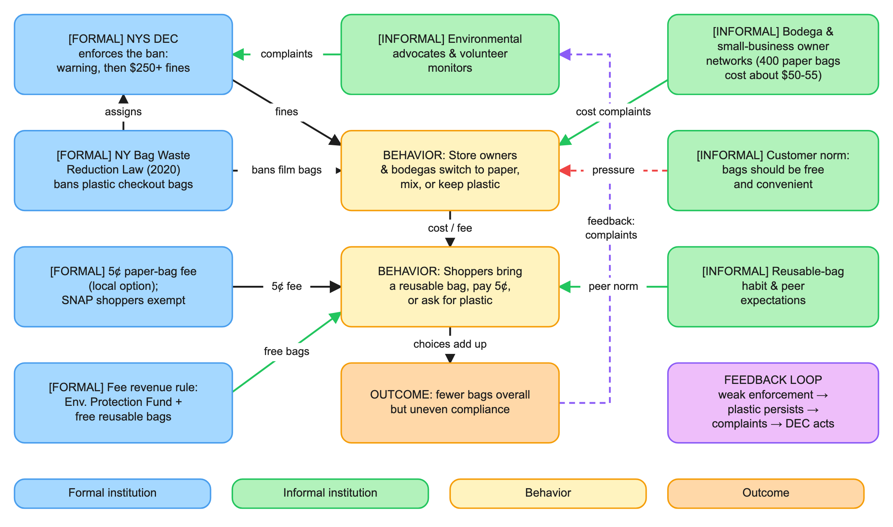

How rules and habits decide where a bag ends up
Chris Ho, Activity 1.3

Plastic bags caught along a riverbank (not in NY, just an example). Photo: NJR ZA, Wikimedia Commons, CC BY-SA 3.0.
1. Introduction | 2. Mapping Institutions | 3. Institutions in Action | 4. Reflection | Sources
Before 2020, New Yorkers used over 23 billion plastic bags a year. In 2019 the state passed the Bag Waste Reduction Act, which banned most plastic checkout bags starting March 1, 2020. It also let each county or city decide whether to charge 5¢ for paper bags.
I picked this case because the same law worked very differently in different places. Big grocery chains switched right away, but a lot of NYC bodegas kept handing out plastic. That gap is about institutions, not just the law itself.
Research question: How do New York's bag laws and the informal habits of shoppers and store owners work together (or against each other) to decide whether bag use actually goes down?
Green = places that charge the 5¢ paper bag fee. Gray = places that chose not to. Blue = the state capitol in Albany. Data: NY Tax Dept. Publication 718-B (2021). Map: OpenStreetMap contributors.
This is my concept map from Activity 1.1. Blue boxes are formal institutions (written laws and rules), green boxes are informal institutions (norms and habits), yellow boxes are behaviors, and orange is the outcome.

My concept map, made in Excalidraw. Click to enlarge.
Formal institutions:
Informal institutions:

The NY State Capitol in Albany, where the law was passed. In 2017 the state actually blocked NYC's own bag fee, then passed a statewide ban two years later. Photo: Beyond My Ken, Wikimedia Commons, CC BY-SA 4.0.

A reusable bag, the habit the law is trying to build. Photo: TooHotToHandle, Wikimedia Commons, CC BY-SA 3.0.
Key actors:

Basil Seggos, DEC Commissioner 2015 to 2023. He led the 2017 bag task force and started enforcement in October 2020. Photo: Jim Clayton, Wikimedia Commons, CC BY-SA 4.0.
Tension: the law vs. bodega costs. A box of 400 paper bags costs bodegas about $50 to $55, while a box of more than twice as many plastic bags costs about $12. The 5¢ fee goes to the government, not the store, so nothing covers that difference. The founder of the bodega association said in 2020: "We are taking the chance on giving out plastic bags, risking getting a fine, because paper bags are too expensive."

A bodega in East Harlem. Small stores like this are where most of the pushback happened. Photo: Deans Charbal, Wikimedia Commons, CC BY-SA 4.0.
Feedback loop: enforcement runs on complaints. By September 2022 the DEC had only made 425 store visits statewide (about 4 a week), sent 151 warnings and taken 26 further actions. A lot of enforcement started from advocates' complaints: plastic keeps showing up, people report it, the DEC acts, and that store stops. It works, but only as fast as volunteers and the DEC's small staff allow.
Synergy: fee + free bags + habit. The 5¢ fee and the free reusable bags paid for by it push in the same direction as the reusable bag habit. By 2025, 85% of New Yorkers said they usually bring their own bag.
The biggest pattern I noticed is that a law only really works when people's habits already point the same way, or when enforcement is strong enough to override them. Big grocery chains followed the ban right away because following state law is just part of how they operate. A lot of bodegas didn't, because their owners compared paper bags costing about eight times more against a fine that almost never came. Same law, two completely different results.
Institutions shape what individuals do mostly by changing what a choice costs at the moment it happens. The 5¢ fee is tiny, but it shows up right at the register when a shopper is deciding. The fine is way bigger, but for a store owner it feels far away and unlikely. Collective action works the same way. Advocacy groups basically became the enforcement system the state couldn't fully pay for, and their complaints are what kept the feedback loop going.
I also noticed that institutions changed each other over time. The state blocked New York City's fee in 2017, then passed a statewide ban two years later but left the fee up to each county, which made the patchwork you can see on the map.
I found three leverage points. First, close the cost gap for small stores, like letting them keep part of the paper fee. Second, fund more DEC inspections in the neighborhoods with the most complaints so enforcement doesn't depend on volunteers. Third, keep building the reusable bag habit, because a shopper who always brings a bag doesn't need a rule at all.
All photos are from Wikimedia Commons under the licenses listed in each caption. Concept map and text by me.